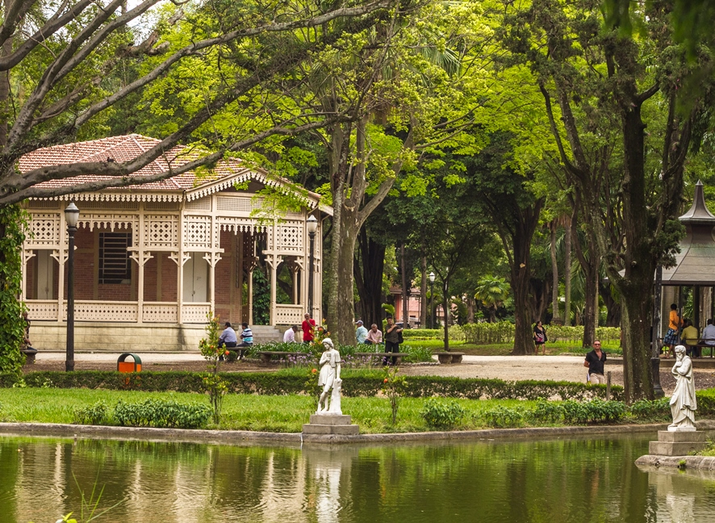
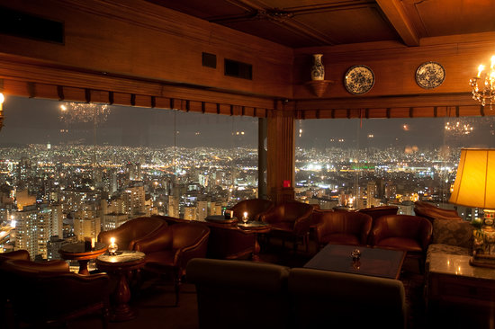
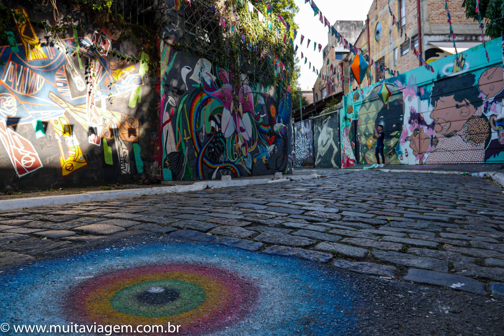
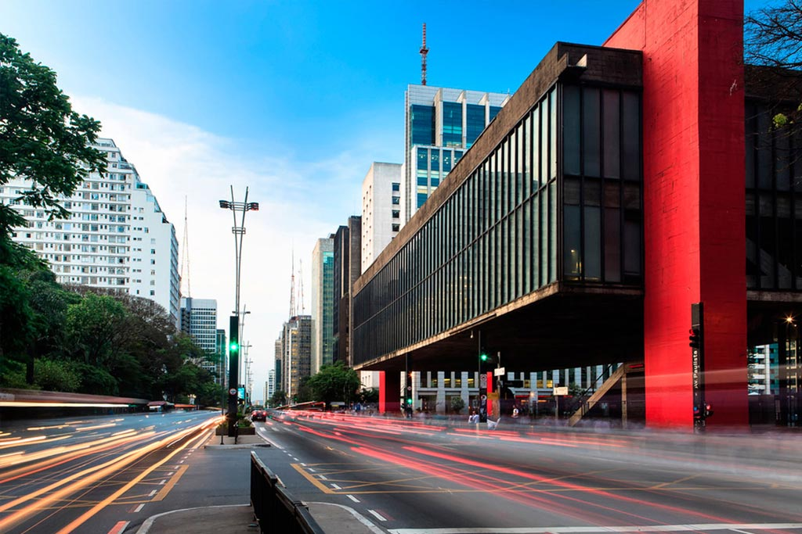
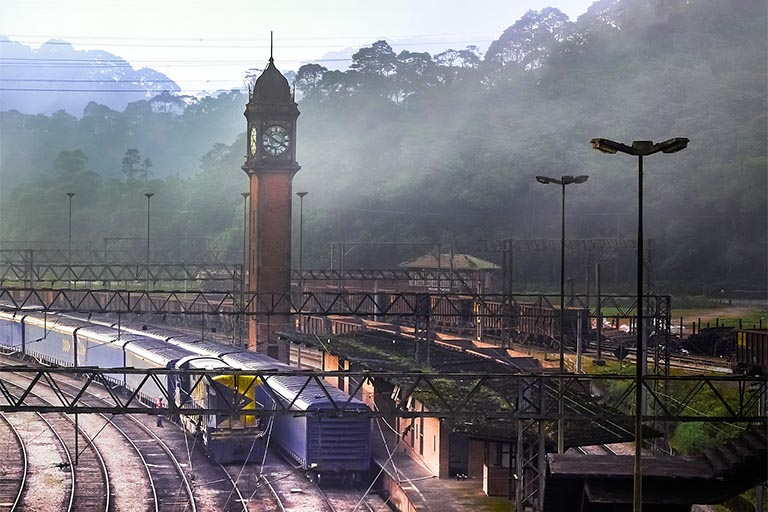

Locais
1. Parque da Luz:Entre o belo espelho d'água,as árvores, e uma gruta com cascata, o lugar está cheio de ótimos cenários para fotografias |
 |
2.Terraço Itália:Do alto do Edíficio Itália, um dos maiores prédios da cidade, São Paulo mostra a sua beleza e imponência. A visitação ao terraço panorâmico no 41ºandar ocorre todos os dias, das 15h às 19h, e há de lá de cima concerteza encontrara ótimas fotografias. |
 |
3.Beco do Batman:Bastante colorido, o beco é composto por algumas ruas grafitadas na boêmia Vila madalena. |
 |
4.Avenida Paulista:Você dificilmente vai encontrar um lugar tão cheio de cor, vida e movimento em São Paulo quanto a Paulista. |
 |
5.Paranapiacaba:Não fica exatamente em São Paulo, porém por sua arquitetura vitoriana, ela concerteza vira um ótimo ponto para fotografias. |
 |
  |
Desenvolvido por Heitor e Davi Av. Principe Mikasa, 5000 |
E-mail: heitorcvsantos@gmail.com Tel.: (11) 97151-1049 |